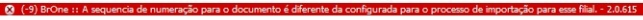
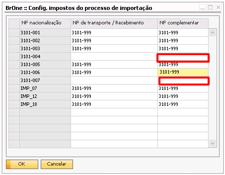

N.F. Complementar
NF Complementar é o processo para gerar a Nota Fiscal Complementar das despesas de importação que impactaram no aumento dos custos dos produtos.
Ao clicar no botão NF Complementar, a tela Assistente - NF Complementar será aberta.

Para gerar uma NF complementar para alguma despesa, basta selecionar a linha e clicar em OK. Será gerado um esboço do Recebimento de mercadorias em moeda corrente. A NF complementar será um espelho dos custos lançados no estoque, via Despesas de Importação.

O valor unitário dos itens será o da coluna Val. custo alocação da tela de despesas de importação multiplicado pela quantidade dos itens. O depósito utilizado será o que está definido no campo Depósito de envio direto, a utilização será a utilização definida no campo Utilização p/ importação gratuito (Caso a versão do SAP Business One utilizada seja a 9.0, o campo considerado será o Só imposto) e o código de imposto será o da coluna NF complementar da tela Config. impostos do processo de Importação. A sequência para a NF será a mesma da coluna Sequência de numeração da tela Configurações de importação.
Após criar a NF complementar, ela pode ser visualizada na tela de detalhes, através do botão […].

Possíveis ocorrências durante o processo
Antes de criar a NF Complementar, é necessário inserir os itens do pedido de compra. Caso os itens não tenham sido inseridos e o usuário clique no botão NF Complementar, a seguinte mensagem será exibida:
{kind=link}
BR One :: Antes de gerar a NF Complementar é necessário inserir os itens.
A NF Complementar deve ser criada após inserir as despesas de importação. Caso ela não tenha sido criada e o usuário clique em NF Complementar, a seguinte mensagem será exibida:
{kind=link}
BR One :: Realize o processo de “Despesas de importação” antes de realizar este processo.
Caso o usuário tente inserir a NF complementar com outra sequência, a seguinte mensagem será exibida:
{kind=link}
BR One :: A sequência de numeração para o documento é diferente da configurada para o processo de importação para essa filial.
Caso os impostos de NF Complementar não tenham sido configurados, será exibida mensagem de erro:
{kind=link}

BR One :: Defina um imposto de importação de NF Complementar para os seguintes impostos de Nacionalização: xx | xx antes de realizar este processo.
Caso nenhum imposto tenha sido configurado na coluna NF complementar das configurações, então será exibida a seguinte mensagem:

BR One :: Configure os “Impostos de importação de NF Complementar” antes de realizar este processo.